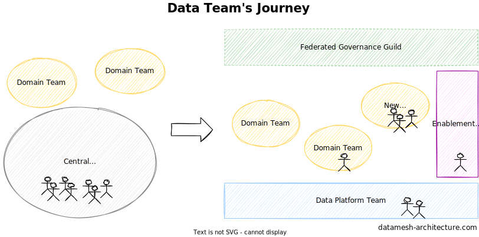

Data Team's Future

Data Mesh is primarily an organizational construct and relies on the principles of team topologies.
It shifts the responsibilities for data towards domain teams which are supported by a data platform team and a data enablement team.
Representatives of all teams come together in a federated governance guild to define the common standards.
Today, in many organizations a central data team is responsible for wide-ranging analytical tasks, from data-engineering to managing data infrastructure to creating C-level reports.
Such a central data team suffers from cognitive overload, including domain, technical, and methodical knowledge.
Data Mesh mitigates this.
Data Mesh offers new perspectives for members of the central data team as their analytical and data engineering skills remain highly necessary.
For example, they are a perfect fit to establish the data platform for people that prefer to work on the infrastructure.
Some of them can form a data enablement team to act as internal consultants, helping domain teams on their journey.
Regardless of their new roles, many of them will meet again in the Data Mesh federated governance guild to shape the future of the Data Mesh.

The real mind shift, however, happens when founding new data-centric domains as shown in the figure above.
Let's look at typical management reports that large central data teams usually produces bases on monolithic data warehouses or data lakes.
With Data Mesh, the data engineers that created those management reports form a new domain team together with a dedicated product owner.
As engineers of the new domain team, they now can focus on their new domain and their consumers.
This allows them to gain deep domain knowledge over time, resulting in better reports and continuous optimizations.
In addition, they switch from using that monolith data warehouse to data products from other domains.
This switch is a gradual process driven by the demand for data products, accelerating the forming of a Data Mesh.
The product owner negotiates with other domain teams about the required data products and makes sure that the reports and other products the new domain team will build in the future fulfills the needs of the business.
As existing domain teams on their journey do more and more data analytics, another perspective for members of the central data team is to join one of those existing teams.
With their existing knowledge, the can accelerate the domain teams' journey towards a Data Mesh by spreading and teaching their knowledge and skills to the others of the team.
It is important that they become full members of the team, and not founding a data subteam within the domain team.
In addition to their knowledge and skills, the data engineers may also bring responsibilities and artefacts from the central data team to their domain teams.
For example, customer profiling, that was previously done by the central data team, will move into the responsibility of the recommendation domain team.
The data scientists, typically, are centrally organized as well.
That's why their future, organizational-wise, is quite similar to that of the central data team.
The data products they focus on are ML features and models.
When joining an existing domain team, such an ML model might be fully integrated in the systems.